Chapter 2: Summarizing data
Benjamin Jäger
Slides first developed by Mine Çetinkaya-Rundel. Derivative of OpenIntro slides, shared under a CC BY-SA licence.
Examining numerical data
Scatterplot
Scatterplots are useful for visualizing the relationship between two numerical variables.
Do life expectancy and total fertility appear to be associated or independent?
They appear to be linearly and negatively associated: as fertility increases, life expectancy decreases.
Was the relationship the same throughout the years, or did it change?
The relationship changed over the years.
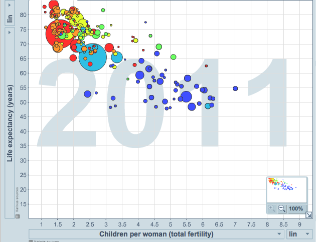
Dot plots
Useful for visualizing one numerical variable. Darker colors represent areas where there are more observations.
How would you describe the distribution of GPAs in this data set? Make sure to say something about the center, shape, and spread of the distribution.
Dot plots & mean
- The mean, also called the average (marked with a triangle in the above plot), is one way to measure the center of a distribution of data.
- The mean GPA is 3.59.
Mean
The sample mean, denoted as \(\overline{x}\), can be calculated as
\[\overline{x} = \frac{x_1 + x_2 + \cdots + x_n}{n},\]
where \(x_1, x_2, \cdots, x_n\) represent the n observed values.
The population mean is also computed the same way but is denoted as \(\mu\). It is often not possible to calculate \(\mu\) since population data are rarely available.
The sample mean is a sample statistic, and serves as a point estimate of the population mean. This estimate may not be perfect, but if the sample is good (representative of the population), it is usually a pretty good estimate.
Stacked dot plot
Higher bars represent areas where there are more observations, makes it a little easier to judge the center and the shape of the distribution.
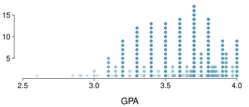
Histograms - Extracurricular hours
- Histograms provide a view of the data density. Higher bars represent where the data are relatively more common.
- Histograms are especially convenient for describing the shape of the data distribution.
- The chosen bin width can alter the story the histogram is telling.
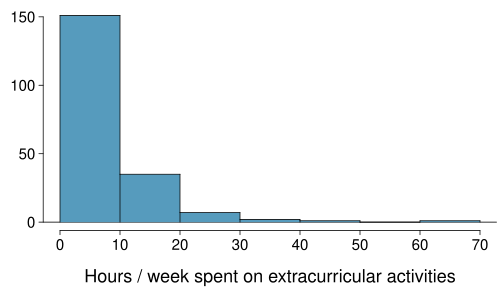
Bin width
Which one(s) of these histograms are useful? Which reveal too much about the data? Which hide too much?
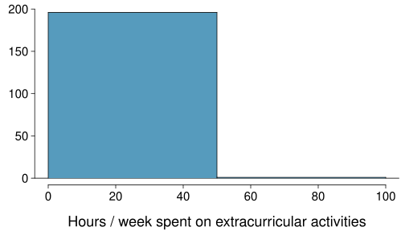
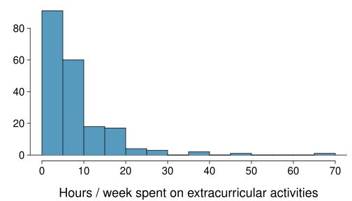
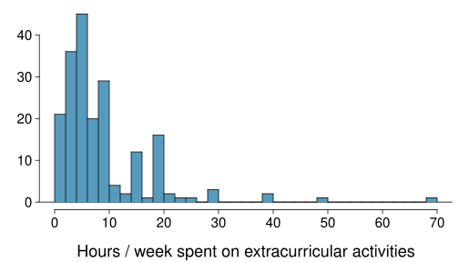
Shape of a distribution: modality
Does the histogram have a single prominent peak (unimodal), several prominent peaks (bimodal/multimodal), or no apparent peaks (uniform)?
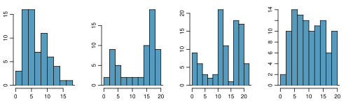
In order to determine modality, step back and imagine a smooth curve over the histogram – imagine that the bars are wooden blocks and you drop a limp spaghetti over them, the shape the spaghetti would take could be viewed as a smooth curve.
Shape of a distribution: skewness
Is the histogram right skewed, left skewed, or symmetric?
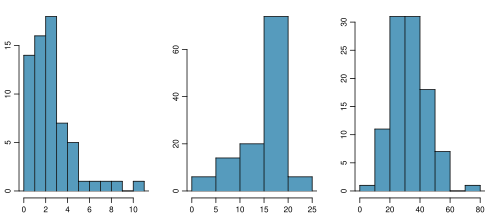
Histograms are said to be skewed to the side of the long tail.
Shape of a distribution: unusual observations
Are there any unusual observations or potential outliers?
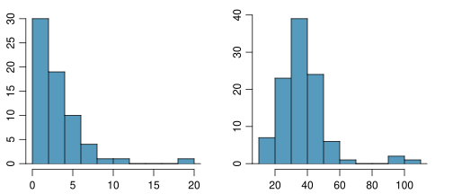
Extracurricular activities
How would you describe the shape of the distribution of hours per week students spend on extracurricular activities?
Unimodal and right skewed, with a potentially unusual observation at 60 hours/week.
Commonly observed shapes of distributions
modality
unimodal
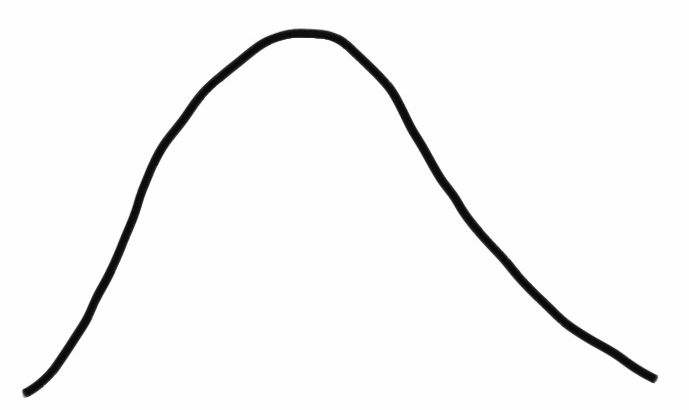
bimodal
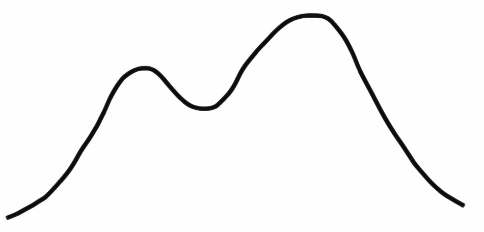
multimodal
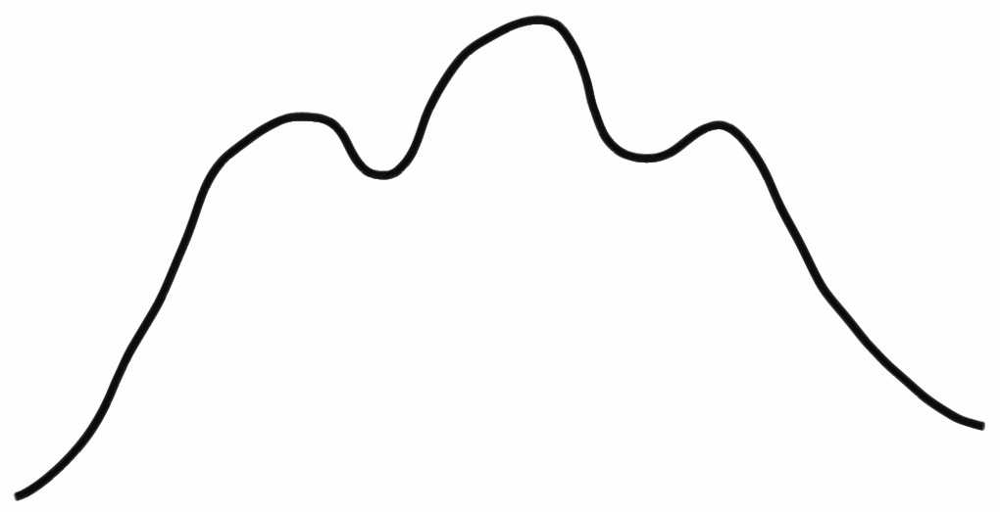
uniform
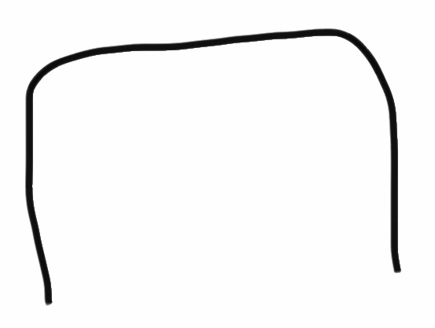
skewness
right skew
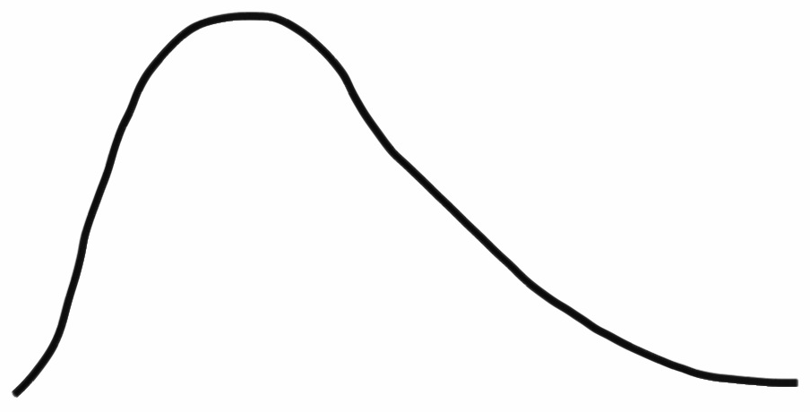
left skew
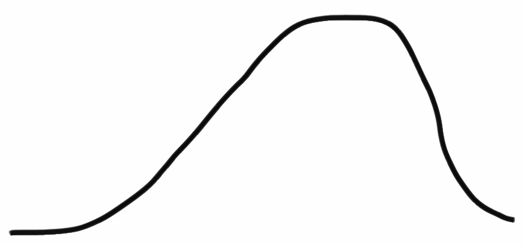
symmetric
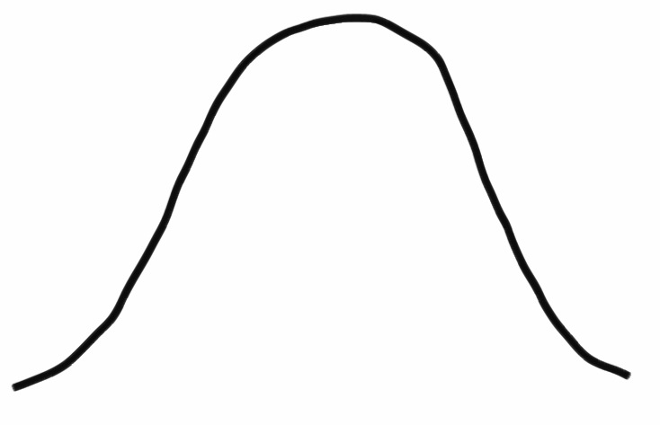
Practice
Which of these variables do you expect to be uniformly distributed?
- weights of adult females
- salaries of a random sample of people from North Carolina
- house prices
- birthdays of classmates (day of the month)
[Participate ⟹ strawpoll.live and use the code 833295]
Application activity: Shapes of distributions
Sketch the expected distributions of the following variables:
- number of piercings
- scores on an exam
- IQ scores
Come up with a concise way (1-2 sentences) to teach someone how to determine the expected distribution of any variable.
Variance
Variance is roughly the average squared deviation from the mean.
\[s^2 = \frac{\sum_{i = 1}^n (x_i - \overline{x})^2}{n - 1}\]
- The sample mean is \(\overline{x} = 6.71\), and the sample size is \(n = 217\).
- The variance of amount of sleep students get per night can be calculated as:
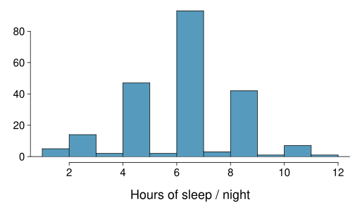
\[s^2 = \frac{(5 - 6.71)^2 + (9 - 6.71)^2 + \cdots + (7 - 6.71)^2}{217 - 1} = 4.11~hours^2\]
Variance (cont.)
Why do we use the squared deviation in the calculation of variance?
- To get rid of negatives so that observations equally distant from the mean are weighed equally.
- To weigh larger deviations more heavily.
Standard deviation
The standard deviation is the square root of the variance, and has the same units as the data.s
\[s = \sqrt{s^2}\]
- The standard deviation of amount of sleep students get per night can be calculated as: \[s = \sqrt{4.11} = 2.03~hours\]
- We can see that all of the data are within 3 standard deviations of the mean.
Median
The median is the value that splits the data in half when ordered in ascending order.
\[0,1,\textcolor{#FF8000}{2},3,4\]
If there are an even number of observations, then the median is the average of the two values in the middle.
\[0,1,\underline{2,3},4,5 \rightarrow \frac{2 + 3}{2} = \color{#FF8000}{2.5}\]
Since the median is the midpoint of the data, 50% of the values are below it. Hence, it is also the \(50^{th}\) percentile.
Q1, Q3, and IQR
The \(25^{th}\) percentile is also called the first quartile, Q1.
The \(50^{th}\) percentile is also called the median.
The \(75^{th}\) percentile is also called the third quartile, Q3.
Between Q1 and Q3 is the middle 50% of the data. The range these data span is called the interquartile range, or the IQR.
\[IQR = Q3 - Q1\]
Box plot
The box in a box plot represents the middle 50% of the data, and the thick line in the box is the median.
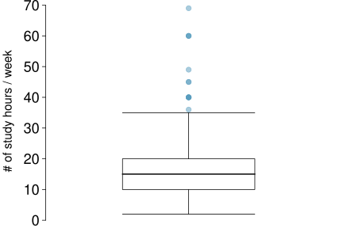
Anatomy of a box plot
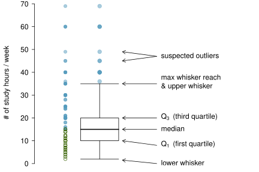
Whiskers and outliers
Whiskers of a box plot can extend up to \(1.5 \times IQR\) away from the quartiles.
\[\begin{align*} \text{max~upper~whisker~reach} &= Q3 + 1.5 \times IQR \\ \text{max~lower~whisker~reach} &= Q1 - 1.5 \times IQR \end{align*}\]
\[\begin{align*} \text{IQR}&: 20 - 10 = 10 \\ \text{max~upper~whisker~reach}&= 20 + 1.5 \times 10 = 35 \\ \text{max~lower~whisker~reach}&= 10 - 1.5 \times 10 = -5 \end{align*}\]
A potential outlier is defined as an observation beyond the maximum reach of the whiskers. It is an observation that appears extreme relative to the rest of the data.
Outliers (cont.)
Why is it important to look for outliers?
- Identify extreme skew in the distribution.
- Identify data collection and entry errors.
- Provide insight into interesting features of the data.
Extreme observations
How would sample statistics such as mean, median, SD, and IQR of household income be affected if the largest value was replaced with $10 million? What if the smallest value was replaced with $10 million?
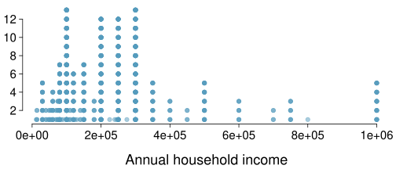
Robust statistics
| robust | not robust | |||||
| scenario | median | IQR | \(\overline{x}\) | \(s\) | ||
| original data | 190K | 200K | 245K | 226K | ||
| move largest to $10 million | 190K | 200K | 309K | 853K | ||
| move smallest to $10 million | 200K | 200K | 316K | 854K | ||
Robust statistics
Median and IQR are more robust to skewness and outliers than mean and SD. Therefore,
- for skewed distributions it is often more helpful to use median and IQR to describe the center and spread
- for symmetric distributions it is often more helpful to use the mean and SD to describe the center and spread
If you would like to estimate the typical household income for a student, would you be more interested in the mean or median income?
Median
Mean vs. median
If the distribution is symmetric, center is often defined as the mean:
mean \(\approx\) median
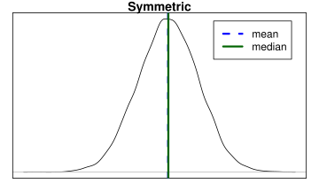
If the distribution is skewed or has extreme outliers, center is often defined as the median
Right-skewed: mean \(>\) median \(\leftrightarrow\) Left-skewed: mean \(<\) median
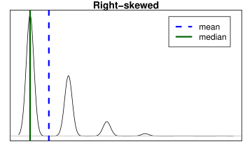
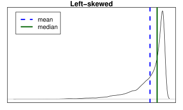
Practice
Which is most likely true for the distribution of percentage of time actually spent taking notes in class versus on Facebook, Twitter, etc.?
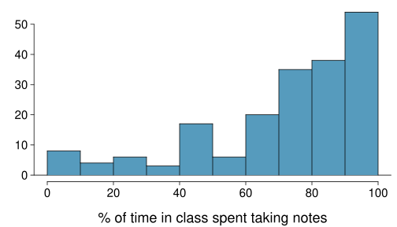
median: 80%
mean: 76%
- mean\(>\) median
- mean \(<\) median
- mean \(\approx\) median
- impossible to tell
Extremely skewed data
When data are extremely skewed, transforming them might make modeling easier. A common transformation is the log transformation.
The histograms on the left shows the distribution of number of basketball games attended by students. The histogram on the right shows the distribution of log of number of games attended.
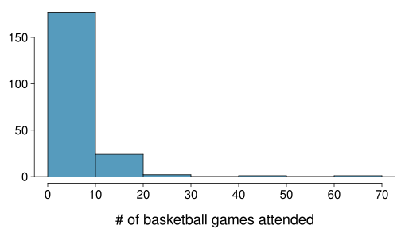
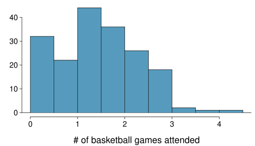
Pros and cons of transformations
Skewed data are easier to model with when they are transformed because outliers tend to become far less prominent after an appropriate transformation.
# of games 70 50 25 \(\cdots\) log(# of games) 4.25 3.91 3.22 \(\cdots\) However, results of an analysis might be difficult to interpret because the log of a measured variable is usually meaningless.
What other variables would you expect to be extremely skewed?
Salary, housing prices, etc.
Intensity maps
What patterns are apparent in the change in population between 2000 and 2010?
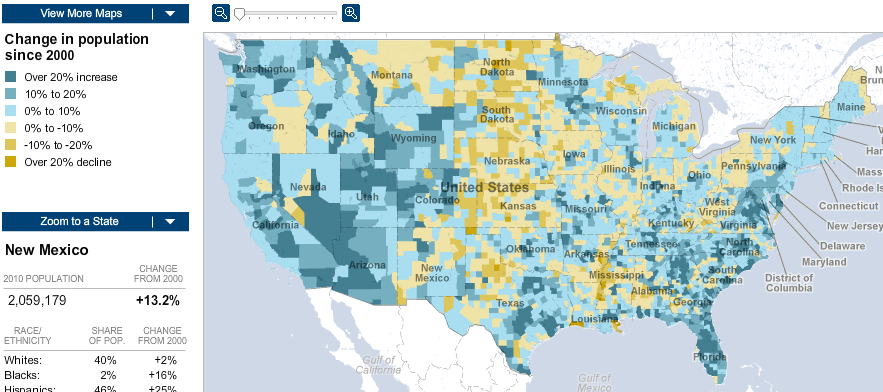
Considering categorical data
Contingency tables
A table that summarizes data for two categorical variables is called a contingency table.
The contingency table below shows the distribution of survival and ages of passengers on the Titanic.
| Survival | ||||
| Died | Survived | Total | ||
| gender | Adult | 1438 | 654 | 2092 |
| Child | 52 | 57 | 109 | |
| Total | 1490 | 711 | 2201 | |
Bar plots
A bar plot is a common way to display a single categorical variable. A bar plot where proportions instead of frequencies are shown is called a relative frequency bar plot.
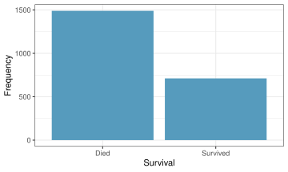
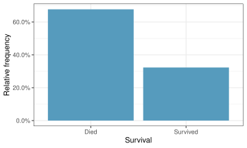
How are bar plots different than histograms?
Bar plots are used for displaying distributions of categorical variables, histograms are used for numerical variables. The x-axis in a histogram is a number line, hence the order of the bars cannot be changed. In a bar plot, the categories can be listed in any order (though some orderings make more sense than others, especially for ordinal variables.)
Choosing the appropriate proportion
Does there appear to be a relationship between age and survival for passengers on the Titanic?
| Survival | ||||
| Died | Survived | Total | ||
| Age | Adult | 1438 | 654 | 2092 |
| Child | 52 | 57 | 109 | |
| Total | 1490 | 711 | 2201 | |
To answer this question we examine the row proportions:
- % Adults who survived: 654 / 2092 \(\approx 0.31\)
- % Children who survived: 57 / 109 \(\approx 0.52\)
Bar plots with two variables
- Stacked bar plot: Graphical display of contingency table information, for counts.
- Side-by-side bar plot: Displays the same information by placing bars next to, instead of on top of, each other.
- Standardized stacked bar plot: Graphical display of contingency table information, for proportions.
What are the differences between the three visualizations shown below?
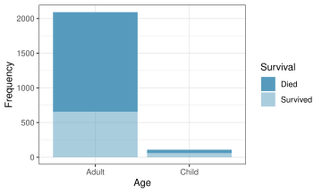
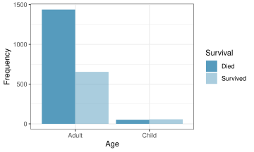
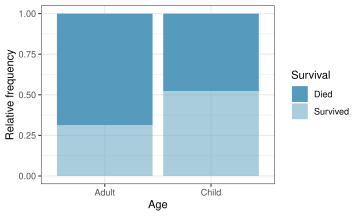
Mosaic plots
What is the difference between the two visualizations shown below?
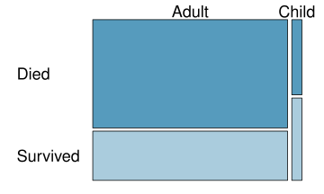
Pie charts
Can you tell which order encompasses the lowest percentage of mammal species?
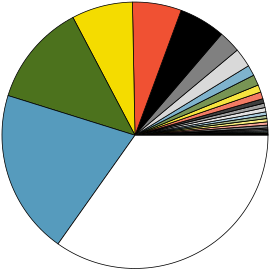
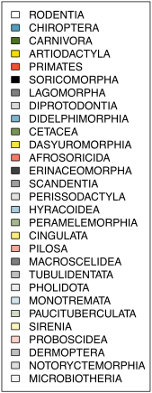
Data from http://www.bucknell.edu/msw3.
Side-by-side box plots
Does there appear to be a relationship between class year and number of clubs students are in?
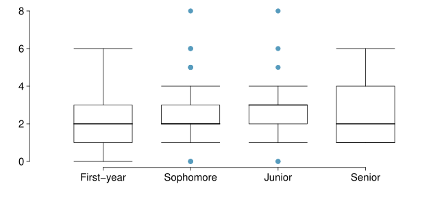
Case study: Gender discrimination
Gender discrimination
- In 1972, as a part of a study on gender discrimination, 48 male bank supervisors were each given the same personnel file and asked to judge whether the person should be promoted to a branch manager job that was described as “routine”.
- The files were identical except that half of the supervisors had files showing the person was male while the other half had files showing the person was female.
- It was randomly determined which supervisors got “male” applications and which got “female” applications.
- Of the 48 files reviewed, 35 were promoted.
- The study is testing whether females are unfairly discriminated against.
Is this an observational study or an experiment?
Experiment
B.Rosen and T. Jerdee (1974), “Influence of sex role stereotypes on personnel decisions”, J.Applied Psychology, 59:9-14.
Data
At a first glance, does there appear to be a relatonship between promotion and gender?
| Promotion | ||||
| Promoted | Not Promoted | Total | ||
| Gender | Male | 21 | 3 | 24 |
| Female | 14 | 10 | 24 | |
| Total | 35 | 13 | 48 | |
% of males promoted: \(21 / 24 = 0.875\)
% of females promoted: \(14 / 24 = 0.583\)
Two competing claims
- “There is nothing going on.”
Promotion and gender are independent, no gender discrimination, observed difference in proportions is simply due to chance. \(\rightarrow\) Null hypothesis - “There is something going on.”
Promotion and gender are dependent, there is gender discrimination, observed difference in proportions is not due to chance. \(\rightarrow\) Alternative hypothesis
A trial as a hypothesis test
- Hypothesis testing is very much like a court trial.
- \(H_0\): Defendant is innocent
\(H_A\): Defendant is guilty - We then present the evidence - collect data.
Then we judge the evidence - “Could these data plausibly have happened by chance if the null hypothesis were true?”
- If they were very unlikely to have occurred, then the evidence raises more than a reasonable doubt in our minds about the null hypothesis.
Ultimately we must make a decision. How unlikely is unlikely?
A trial as a hypothesis test (cont.)
If the evidence is not strong enough to reject the assumption of innocence, the jury returns with a verdict of “not guilty”.
- The jury does not say that the defendant is innocent, just that there is not enough evidence to convict.
- The defendant may, in fact, be innocent, but the jury has no way of being sure.
Said statistically, we fail to reject the null hypothesis.
- We never declare the null hypothesis to be true, because we simply do not know whether it’s true or not.
- Therefore we never “accept the null hypothesis”.
A trial as a hypothesis test (cont.)
- In a trial, the burden of proof is on the prosecution.
- In a hypothesis test, the burden of proof is on the unusual claim.
- The null hypothesis is the ordinary state of affairs (the status quo), so it’s the alternative hypothesis that we consider unusual and for which we must gather evidence.
Recap: hypothesis testing framework
- We start with a null hypothesis (\(H_0\)) that represents the status quo.
- We also have an alternative hypothesis (\(H_A\)) that represents our research question, i.e. what we’re testing for.
- We conduct a hypothesis test under the assumption that the null hypothesis is true, either via simulation (today) or theoretical methods (later in the course).
- If the test results suggest that the data do not provide convincing evidence for the alternative hypothesis, we stick with the null hypothesis. If they do, then we reject the null hypothesis in favor of the alternative.
Simulating the experiment…
… under the assumption of independence, i.e. leave things up to chance.
If results from the simulations based on the chance model look like the data, then we can determine that the difference between the proportions of promoted files between males and females was simply due to chance (promotion and gender are independent).
If the results from the simulations based on the chance model do not look like the data, then we can determine that the difference between the proportions of promoted files between males and females was not due to chance, but due to an actual effect of gender (promotion and gender are dependent).
Application activity: simulating the experiment
Use a deck of playing cards to simulate this experiment.
Let a face card represent not promoted and a non-face card represent a promoted. Consider aces as face cards.
- Set aside the jokers.
- Take out 3 aces \(\rightarrow\) there are exactly 13 face cards left in the deck (face cards: A, K, Q, J).
- Take out a number card \(\rightarrow\) there are exactly 35 number (non-face) cards left in the deck (number cards: 2-10).
Shuffle the cards and deal them intro two groups of size 24, representing males and females.
Count and record how many files in each group are promoted (number cards).
Calculate the proportion of promoted files in each group and take the difference (male - female), and record this value.
Repeat steps 2 - 4 many times.
Step 1
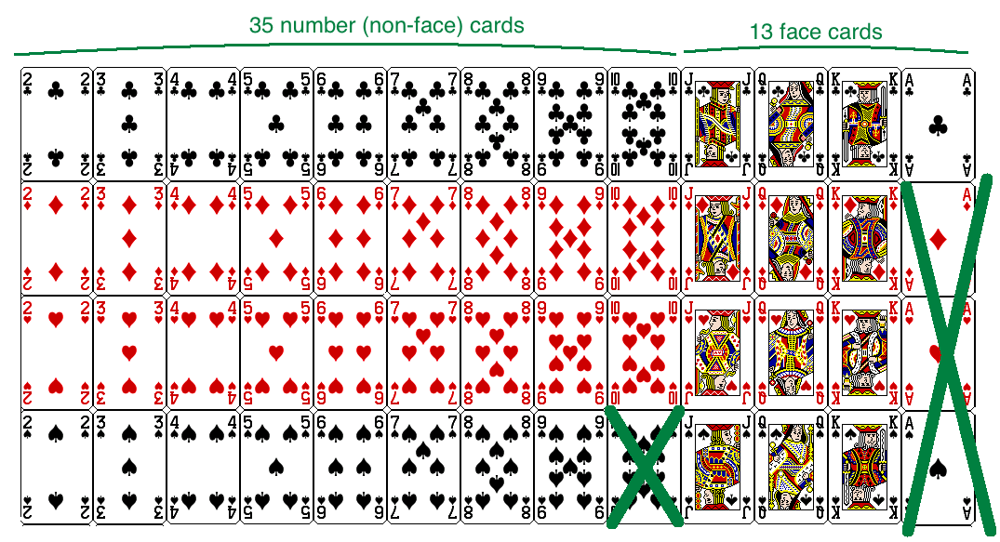
Step 2 - 4
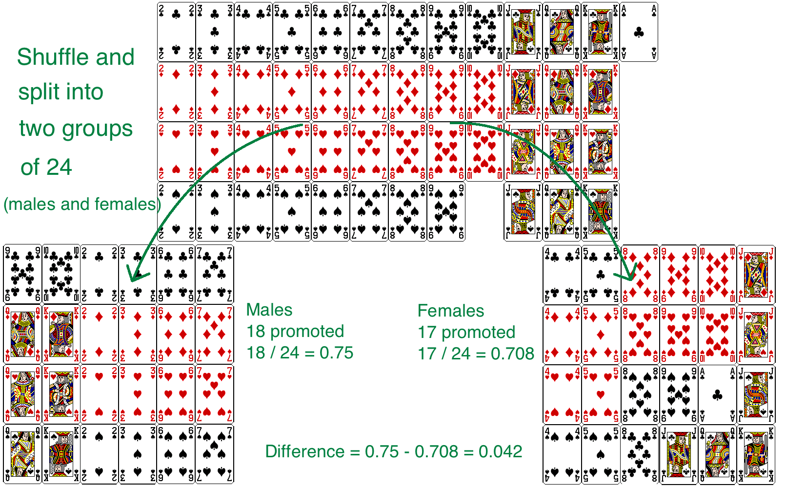
Simulations using software
These simulations are tedious and slow to run using the method described earlier. In reality, we use software to generate the simulations. The dot plot below shows the distribution of simulated differences in promotion rates based on 100 simulations.

Practice
Do the results of the simulation you just ran provide convincing evidence of gender discrimination against women, i.e. dependence between gender and promotion decisions?
- No, the data do not provide convincing evidence for the alternative hypothesis, therefore we can’t reject the null hypothesis of independence between gender and promotion decisions. The observed difference between the two proportions was due to chance.
- Yes, the data provide convincing evidence for the alternative hypothesis of gender discrimination against women in promotion decisions. The observed difference between the two proportions was due to a real effect of gender.
DSK803 · Chapter 2: Summarizing data